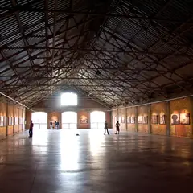
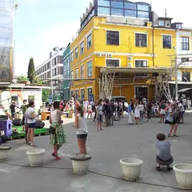
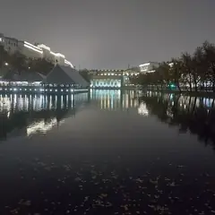

У метро · ЦАО
Куда сходить у метро «Чкаловская»
Для 10 мест из нашего каталога ближайшая станция — «Чкаловская» (ЦАО): 3 кофейни, 3 ресторана или кафе, 2 культурных места и 1 развлечение. Например, «Винзавод», «Artplay» и «FLØR». Недорогих, примерно до 1 500 ₽ на человека, — 5. 4 готовых плана проходят через эту станцию — например, «Галереи Винзавода и Artplay», с маршрутом пешком между точками.
- 10 мест
- 4 плана
Места у метро «Чкаловская» 10

4-й Сыромятнический пер., 1/8
Галереи в бывших цехах винного завода, книжный и кофейни. Вход на территорию свободный.
Подробнее и маршрут: ВинзаводПозвать сюда: Винзавод
Фото: Lite, CC BY-SA 4.0 · Wikimedia Commons

Нижняя Сыромятническая ул., 10
Дизайн-квартал с выставками, шоурумами и кафе в пяти минутах от Винзавода.
Подробнее и маршрут: ArtplayПозвать сюда: Artplay
Фото: Vlad Shtelts (Stelz), CC BY-SA 3.0 · Wikimedia Commons
Чистопрудный бул., 23, стр. 1
Bib Gourmand Michelin 2021
Маленький ресторан на Чистых прудах с французским настроением и хорошим вином.
ул. Покровка, 38, стр. 1 (вход со двора с Лялина пер.)
Новое
Крошечный театр во дворе на Покровке: «Зойкина квартира» Булгакова с погружением в НЭП и «Атмосферник» — целый вечер в духе 1920-х.
Покровский бул., 8, стр. 1
В гиде Michelin 2021
Ресторан с сезонными меню на Покровском бульваре.
ул. Покровка, 17, стр. 5
Новое
Клуб в старом особняке на Покровке: в малом зале открытые микрофоны и стендап-рулетка, в большом — концерты и проверки известных комиков. Своя кухня, открыто до полуночи.
Подробнее и маршрут: Still Standup ClubПозвать сюда: Still Standup Club
ул. Покровка, 20/1, стр. 1
Бистро-концепт-стор в стиле брутализма с верандой, продукты российских марок. 9–23.
ул. Покровка, 19
Венская кофейня в знаменитом «Доме с ушами»: устрицы, паста и десерты. 12–00, чек ~2 300 ₽.
Подробнее и маршрут: Caffè Mandy’sПозвать сюда: Caffè Mandy’s
ул. Покровка, 20/1
Кофейня в эстетике походов: зацепы на стенах, термосы и снаряжение. 10–22.
Подсосенский пер., 8, стр. 2
Спешелти-кофейня со своей обжаркой SeaDog, открылась в 2026 году.
Готовые планы 4
- Винзавод · Центр современного искусства · м. Чкаловская
- 10 минут пешкомArtplay · Дизайн-центр
Несколько выставок подряд в бывших цехах, кофе и дизайн-лавки — разговор завяжется сам.
Открыть план: Галереи Винзавода и ArtplayПозвать сюда: Галереи Винзавода и Artplay
Фото: Lite, CC BY-SA 4.0 · Wikimedia Commons
- Винзавод · Центр современного искусства · м. Чкаловская
- 10 минут пешкомArtplay · Дизайн-центр
Выставки в бывших цехах, дизайн-лавки и кофе — неспешная суббота.
Открыть план: Галереи Винзавода и ArtplayПозвать сюда: Галереи Винзавода и Artplay
Фото: Lite, CC BY-SA 4.0 · Wikimedia Commons

- Чистые пруды · Бульвар и пруд · м. Чистые пруды
- 3 минуты пешкомFLØR · Ресторан
Вечер у пруда на Чистых и ужин в маленьком FLØR с французским настроением.
Открыть план: Чистые пруды и FLØRПозвать сюда: Чистые пруды и FLØR
Фото: Vasilii Martynov, CC BY-SA 4.0 · Wikimedia Commons
- Вне… театр · Иммерсивный театр · м. Чкаловская
- 3 минуты пешкомХаос · Гастро-особняк
Булгаковская «Зойкина квартира» в крошечном «Вне… театре», где вас погружают в НЭП, а потом ужин в загадочном гастро-особняке «Хаос» в паре минут.
Открыть план: «Зойкина квартира» во дворе на ПокровкеПозвать сюда: «Зойкина квартира» во дворе на Покровке
Как позвать
- Выбери план, место или событие — в карточке адрес, цены и маршрут в Яндекс Картах.
- Нажми «Позвать сюда» — соберётся приглашение-игра для свидания или голосование для компании.
- Отправь ссылку в любой мессенджер: тебе ответят, а компания отметит, куда и когда может. Бесплатно и без регистрации.